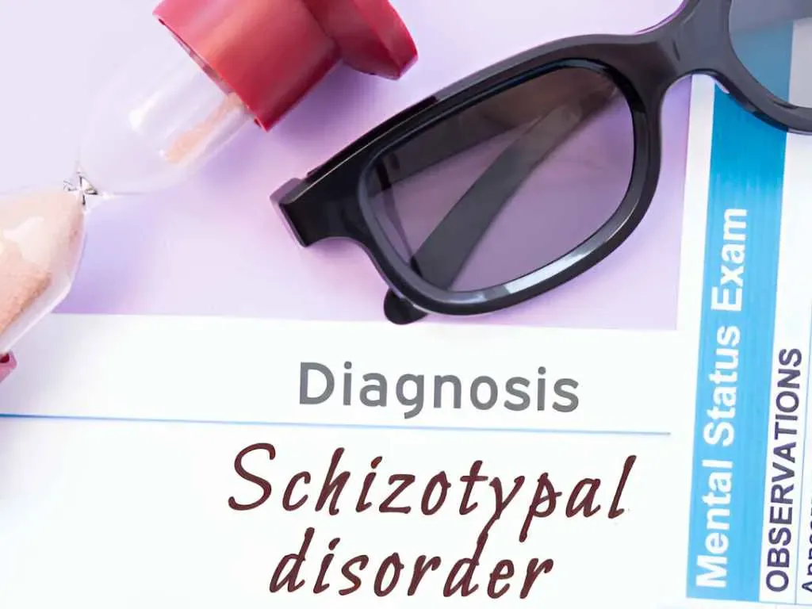

Schizotypal Personality Disorder (STPD) Treatment by Psychiatrist
Schizotypal Personality Disorder (STPD) is a condition that falls within the spectrum of personality disorders. Individuals with STPD often experience a range of symptoms that can affect their social interactions, thinking and behavior. Understanding these symptoms and the available treatment options is crucial for individuals, their loved ones, and mental health professionals alike.
What are the signs of Schizotypal Personality Disorder?
Schizotypal Personality Disorder is characterized by a pattern of eccentric behaviors, distorted thinking, and discomfort in social situations. People with STPD may display odd or peculiar behavior, unconventional beliefs, and difficulties forming close relationships. While STPD shares some features with schizophrenia, it is distinct in that individuals with STPD do not typically experience full-blown psychotic episodes or severe delusions.

What are the Symptoms of Schizotypal Personality Disorder?
The symptoms of STPD can vary in intensity and presentation. Some common symptoms include:
- Odd Beliefs or Magical Thinking: Individuals with STPD may have unusual beliefs or experiences that are not based in reality. These beliefs can include ideas of having special powers, a connection to supernatural forces, or magical thinking.
- Eccentric Behavior and Appearance: People with STPD might display eccentric behaviors, dress in an unconventional manner, or have peculiar speech patterns that others find challenging to relate to.
- Social Isolation: Individuals with STPD often struggle with forming and maintaining close relationships. They may feel uncomfortable in social situations and have difficulty understanding social cues.
- Paranoia and Suspiciousness: Individuals with STPD may develop suspiciousness or paranoid thoughts, often believing that others have hidden motives or intentions.
- Limited Emotional Expression: Emotionally, individuals with STPD might appear distant or detached, with flattened affect and difficulty conveying their feelings.
- Anxiety in Social Settings: Due to their difficulties with social interactions, individuals with STPD may experience high levels of anxiety in social situations, making it challenging for them to connect with others.
- Unusual Perceptions: Some individuals with STPD may report experiencing perceptual abnormalities, such as illusions or mild hallucinations. These experiences are not as severe or frequent as those seen in schizophrenia.
What are the Treatment Approaches for Schizotypal Personality Disorder?
Treating Schizotypal Personality Disorder requires a comprehensive approach that addresses the complex combination of symptoms and challenges associated with the disorder. While there is no one-size-fits-all solution, various therapeutic methods have proven effective:
- Psychotherapy: Psychotherapy, or talk therapy, is a cornerstone of STPD treatment. Cognitive Behavioral Therapy (CBT) can help individuals recognize and challenge distorted thoughts and behaviors. Social skills training is also valuable, as it helps individuals improve their ability to navigate social situations.
- Medication: Medication is not a primary treatment for STPD, but certain antipsychotic medications may be used to manage specific symptoms such as anxiety, paranoia, or perceptual disturbances. A psychiatrist can determine if medication is appropriate on a case-by-case basis.
- Group Therapy: Group therapy provides a supportive environment where individuals with STPD can connect with others facing similar challenges. It helps improve social skills and reduces feelings of isolation.
- Coping Skills Training: Individuals with STPD can benefit from learning coping strategies to manage anxiety and improve emotional regulation. Mindfulness practices and relaxation techniques may also be helpful.
- Family Support: Involving family members in therapy can aid in understanding the disorder, enhancing communication, and providing a supportive network for the individual.
- Long-Term Management: STPD is a chronic condition, and treatment is often ongoing. Learning to manage symptoms, build healthy relationships, and develop effective coping mechanisms are lifelong endeavors.
What are the Challenges and Prognosis of Schizotypal Personality Disorder?
Treating Schizotypal Personality Disorder can be challenging due to the intricate interplay of symptoms and the individual’s unique experiences. Stigma and misunderstanding of the disorder can further complicate the journey to seeking help. However, advances in mental health awareness and research have led to improved treatment strategies and increased understanding of STPD.
It’s important to remember that individuals with STPD, like all individuals, have their strengths and unique qualities. With the right support and treatment, many can find ways to manage their symptoms and lead meaningful lives.
Why is Dr. Gorav Gupta the Best psychiatrist for Schizotypal personality disorder?
Doctor Gorav Gupta has experience and expertise in treating personality disorders, including Schizotypal Personality Disorder. He specializes in this area and is more likely to be familiar with the unique challenges and treatment approaches associated with the disorder.Dr. Gorav Gupta has all the credentials, education, and experience in this field. He has many years of experience, training in personality disorders, and track record in treating similar conditions.He is familiar with evidence-based therapies such as Cognitive Behavioral Therapy (CBT), social skills training, and potentially medication for managing specific symptoms. There are patient reviews or testimonials about the doctor’s approach, effectiveness, and patient satisfaction.He demonstrates empathy, active listening, and clear communication.